01
3D Awareness Analysis
We use multi-view correspondence to identify which backbones preserve physical geometry across changing viewpoints.
VEGA-3D turns a frozen video generation model into a Latent World Simulator, extracting geometry-aware spatiotemporal priors and fusing them with semantic visual tokens for 3D scene understanding, spatial reasoning, and embodied manipulation.
1 Huazhong University of Science and Technology 2 Baidu Inc., China † Project Lead
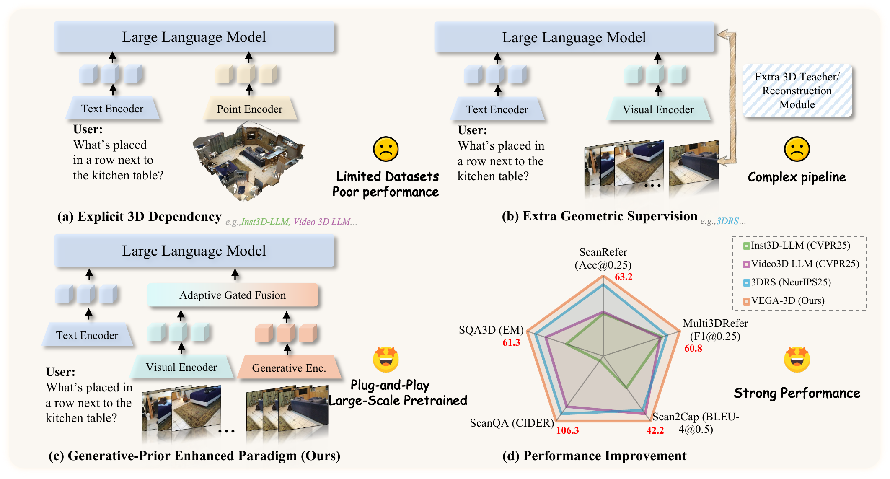
Multimodal large language models are strong at semantics, but they still struggle with spatial blindness: fine-grained geometric reasoning, view-consistent localization, and physical dynamics. VEGA-3D starts from a different observation. If modern video generation models can synthesize coherent videos under camera motion and interaction, they must already encode robust 3D structure and motion priors.
We therefore repurpose a pretrained video diffusion model as a frozen latent world simulator, extract intermediate features at informative denoising stages, and align them with semantic visual tokens through adaptive gated fusion. This produces consistent gains across scene understanding, spatial reasoning, and robotic manipulation without requiring explicit 3D supervision.
We use multi-view correspondence to identify which backbones preserve physical geometry across changing viewpoints.
A frozen video diffusion model is queried at intermediate layers and mid-denoising steps, where geometry is strongest.
Generative and semantic token streams are projected into a shared space and fused with token-level dynamic gating.
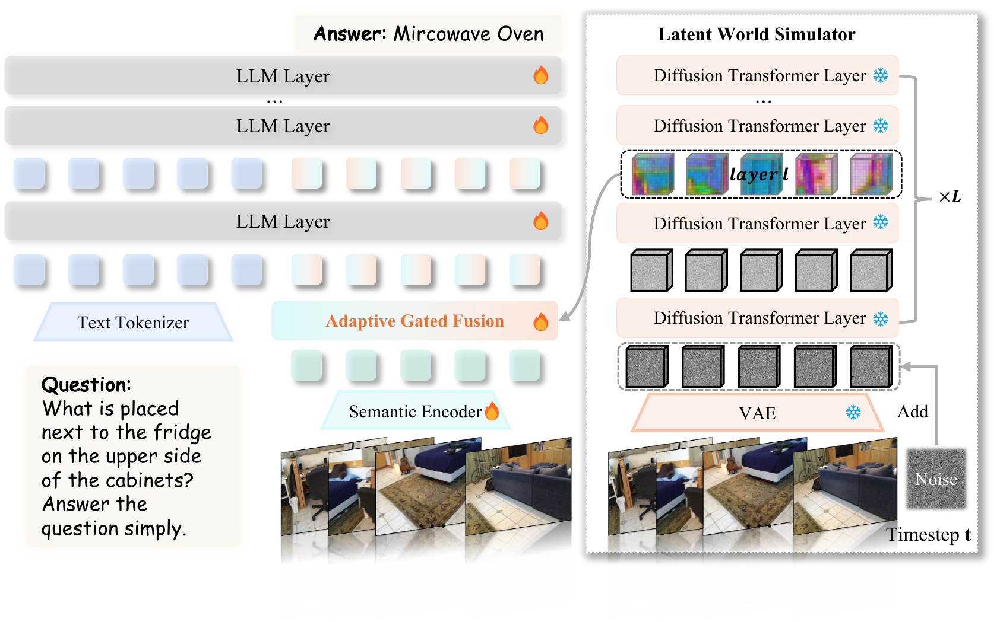
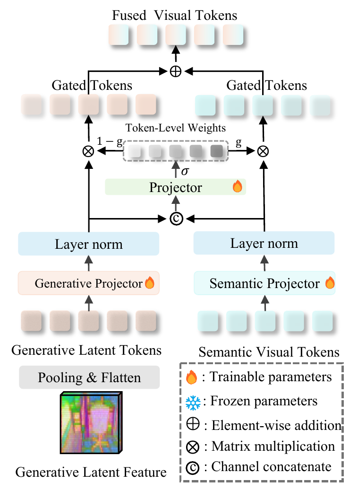
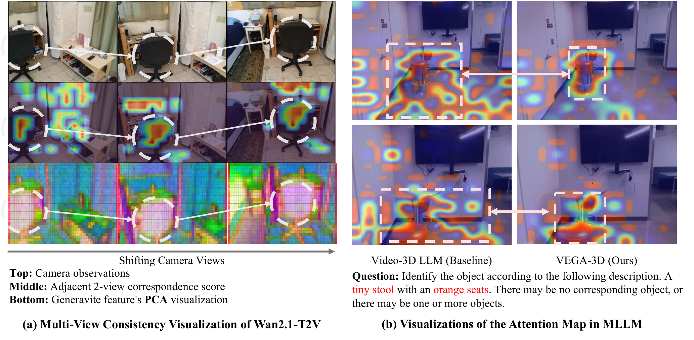
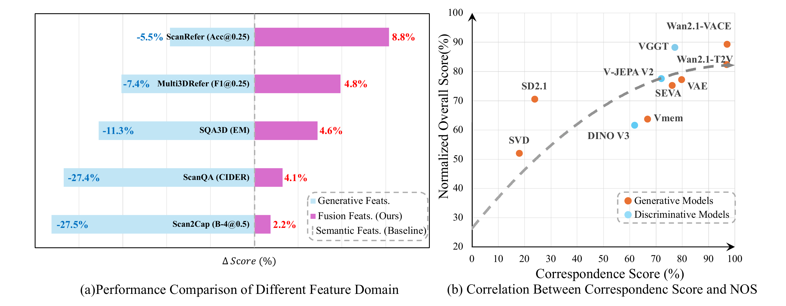
VEGA-3D gives the largest improvements on localization-centric tasks, where geometry acts as a strong spatial anchor for MLLMs.
The same generative prior transfers to video-based reasoning tasks such as relative distance, direction, and appearance order.
Physical-world priors also help action models, improving robotic manipulation performance even in a saturated regime.
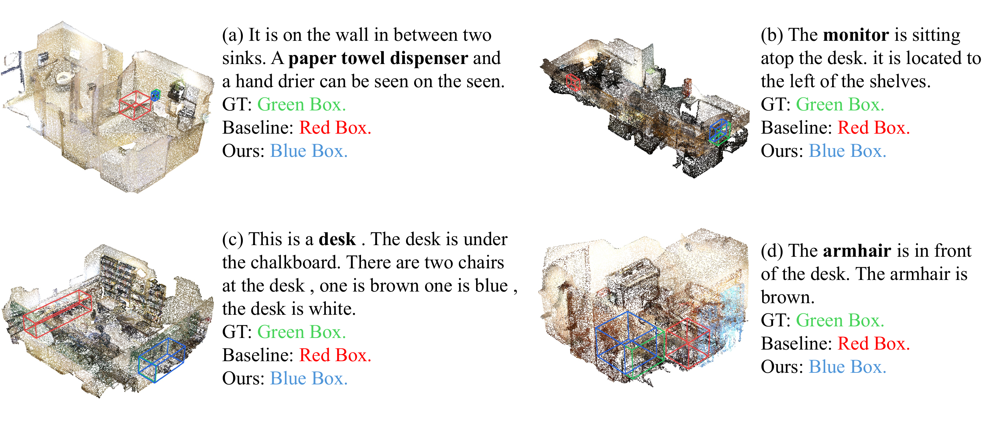
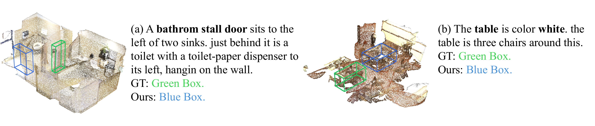
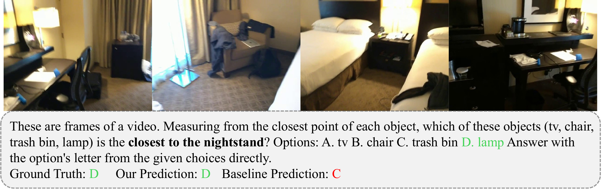
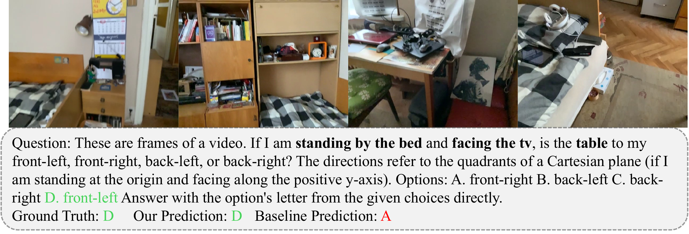
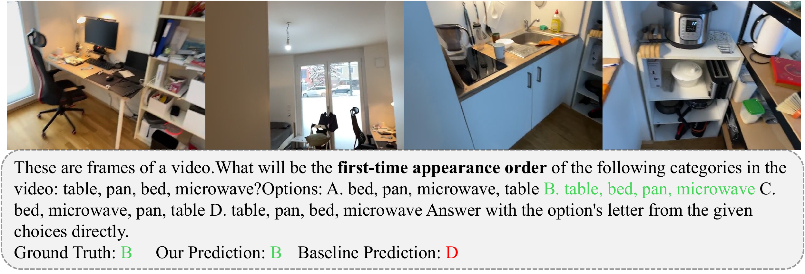
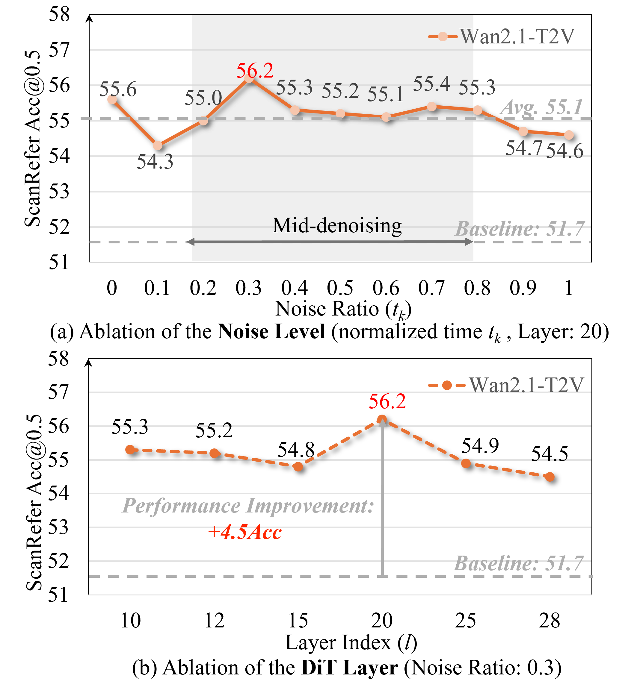
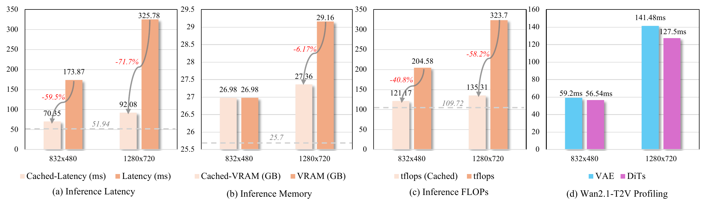
@article{wu2026vega,
title = {Generation Models Know Space: Unleashing Implicit 3D Priors for Scene Understanding},
author = {Xianjin Wu and Dingkang Liang and Tianrui Feng and Kui Xia and Yumeng Zhang and Xiaofan Li and Xiao Tan and Xiang Bai},
journal = {arXiv preprint arXiv:2603.19235},
year = {2026}
}